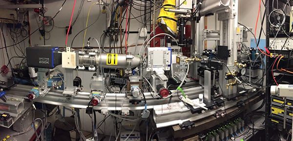

|
Beamline
Lay-out

,
D-line set-up for combined GISAXS and GIWAXS experiments for in-situ
annealing of nanoparticles in an inert gas environment for length scales from 1-100nm. From right to left:
sample chamber on goniometer, Pilatus 100k WAXS detector, flight path, Pilatus 200k
SAXS detector. Note that the D-line experimental hutch D1 had a length of only 3m.
(image: Tobias Hanrath, Cornell).
Beamline
lay-out is at the very core of beamline construction. The space for
optics and experiments is often a given. The art of beamline design is
in making the most of the available space.
Available
space for the experiments hutch is also an issue. While
modern SAXS beamlines often feature lengths of 10 m or more, this does
not preclude smaller beamlines to do great nanoscience! For instance
for small nanoparticles (<10 nm), sample-detector distance at 10 keV
is between 0.5 m and 1 m; for block copolymers (10-100 nm) a
sample-detector distance of 2m is sufficient. If a small area detector is
available, GISAXS can
even be done on a surface diffractometer.
For GIWAXS there are very different constraints. Here we want the area
detector close to the sample. How close is a function of the detector
size; if only a small detector is available, it can be as close as 100
mm. For such am arrangement, space around the sample has to be
carefully planned.
|